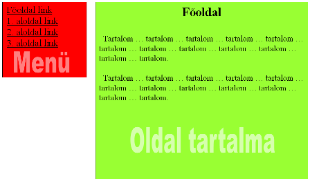

HTML és CSS segédlet
Tartalomjegyzék
HTML és CSS szintaxis ellenőrzése
A weboldalunk kódját a következő oldalakon ellenőrizhetjük:
- HTML: http://validator.w3.org/
- CSS: http://jigsaw.w3.org/css-validator/
Ha az oldalunk helyes, az alábbi módon egy erre utaló "pecsétet" tehetünk
rá, amelyre kattintva bárki láthatja, tényleg jó-e a szintaxisunk. A "pecsétek"
és linkjük html kódja (amelyet a weboldalunkra másolhatunk) a következő:
- HTML:
<a href="http://validator.w3.org/check?uri=referer">
<img src="http://www.w3.org/Icons/valid-html401.png" alt="Valid HTML4"></a>
- CSS:
<a href="http://jigsaw.w3.org/css-validator/check/referer">
<img src="http://www.w3.org/Icons/valid-css.png" alt="Valid CSS"></a>
A fenti html kódot helyezzük el tehát a html oldalunk tetszőleges részén. Itt
a következő fog megjelenni:


Vissza az elejére
HTML fájlok szerkezete
<!DOCTYPE HTML PUBLIC "-//W3C//DTD HTML 4.01 Transitional//EN">
<html>
<head>
<meta http-equiv="Content-Type" content="text/html; charset=ISO-8859-2">
<title>Oldal címe</title>
</head>
<body>
<h1>Címsor</h1>
<p>Bekezdés</p>
</body>
</html>
Vissza az elejére
HTML címkék
| Főcím | <h1></h1> |
| Alcím | <h2></h2> |
| Bekezdés | <p></p> vagy <div></div> |
| Sortörés | <br> (nincs záró címke!) |
| Vastag/dőlt/aláhúzott | <strong></strong>, <em></em>, <u></u> |
| Beillesztett kép | <img src="kep.png" alt="leírás"> (1: Nincs záró címke! 2: A képet ugyanabban a könyvtárban kell elhelyezni.) |
| Külső/belső link | <a href="http://valami.hu">szöveg</a>, <a href="fajl.html">szó</a> |
| Hivatkozási pont | <a name="pont"></a> |
| Számozott lista | <ol>
<li>Valami</li>
<li>Valami2</li>
</ol> |
| Számozatlan lista |
<ul>
<li>Valami</li>
<li>Valami2</li>
</ul> |
| Táblázat | <table>
<tr><td>Bal fent</td><td>Jobb fent</td></tr>
<tr><td>Bal lent</td><td>Jobb lent</td></tr>
</table> |
| Űrlap |
<form name="input" action="oldal.html" method="get">
<label>Vezetéknév</label>
<input type="text" name="vnev">
<label>Keresztnév</label>
<input type="text" name="knev">
<input type="submit" value="Mehet">
</form>
|
Vissza az elejére
Stílustulajdonságok
Adott elem stílusának megadása: <div style="...">...</div> pl egy div
elem stílusát adja meg, a <h1 style="...">...</h1> pedig egy h1 típusú
címét. A style="..." stílus-megadásba a ... helyére az alábbiak szerint írhatunk
tulajdonságokat.
| Szín | color: red; vagy color: #ff00ff; |
| Háttérszín | background: blue; vagy background: #00ff00; |
| Háttérkép | background-image: url('kepfajl.png'); |
| Keret | border-style:solid/dashed/dotted;
border-width:5px;
border-color:black; |
| Méret | width: 10px;
height: 100px; |
| Betűtípus | font-family: Arial/Courier/Times
font-size: 12px;
font-style: italic;
font-weight: bold; |
| Margó/behúzás | margin: 10px;
padding: 20px; |
| Szöveg igazítása | text-align: center/right/justify; |
| Kép középre igazítása | display: block;
margin-left: auto;
margin-right: auto;
|
| Úsztatás | float: right/left; |
Vissza az elejére
Stílustulajdonságok megadása CSS fájlban
Készíteni kell egy valami.css nevű fájlt, és a HTML fájl fejlécét így kell módosítani,
hogy tudjon az elkészített valami.css fájlról (csak a módosítandó sort írtam vastag betűvel)
<head>
<meta http-equiv="Content-Type" content="text/html; charset=ISO-8859-2">
<link rel="stylesheet" href="valami.css" type="text/css">
<title>Oldal címe</title>
</head>
A CSS fájl (valami.css) tartalma a következőhöz hasonló lehet:
body {
background: #ff0ff0;
color: #00ff00;
font-size: 12pt;
margin: 0px;
padding: 10px;
}
h1 {
background: #00ff00;
color: #ff0ff0;
}
a {
text-decoration: none;
font-weight: bold;
background: #00ff00;
color: #ff0ff0;
}
a:hover {
background: #ff0ff0;
color: #00ff00;
}
.kiemeles {
color: red;
background: yellow;
}
- megjegyzés: az utolsó előtti elem (a:hover { ... }) azt a lehetőséget mutatja,
hogy ha felhasználó az egérrel a link fölé megy, arra az esetre más stílust is meg
lehet adni. Ez a gyakran használt stílus-elem a linkek kiemelését segíti.
-
2. megjegyzés: az utolsó elem (.kiemeles { ... } - figyeljünk a kezdő pontra) azt
jelenti, hogy ezt a stílust (piros betű sárga háttér előtt) bármely elemre alkalmazhatjuk a
HTML oldalunkon. Tegyük fel, hogy egy adott szöveget ezzel a stílussal akarunk ellátni (kiemelni),
ezt a következőképpen tehetjük meg a HTML fájlban:
<p class="kiemeles">Szöveg ... szöveg ... </p>
Ha csak a szöveg egy részére akarjuk alkalmazni:
<p>Normál szöveg ... <span class="kiemeles">kiemelt szó</span> ...</p>
Hasonlóképpen bármely CSS stíluselemet megadhatunk a fenti módon, és alkalmazhatjuk azt egy tetszőleges HTML elemre.
Vissza az elejére
HTML színkódok
| #000000 |
#003300 |
#006600 |
#009900 |
#00cc00 |
#00ff00 |
#330000 |
#333300 |
#336600 |
#339900 |
#33cc00 |
#33ff00 |
#660000 |
#663300 |
#666600 |
#669900 |
#66cc00 |
#66ff00 |
| #990000 |
#993300 |
#996600 |
#999900 |
#99cc00 |
#99ff00 |
#cc0000 |
#cc3300 |
#cc6600 |
#cc9900 |
#cccc00 |
#ccff00 |
#ff0000 |
#ff3300 |
#ff6600 |
#ff9900 |
#ffcc00 |
#ffff00 |
| #000033 |
#003333 |
#006633 |
#009933 |
#00cc33 |
#00ff33 |
#330033 |
#333333 |
#336633 |
#339933 |
#33cc33 |
#33ff33 |
#660033 |
#663333 |
#666633 |
#669933 |
#66cc33 |
#66ff33 |
| #990033 |
#993333 |
#996633 |
#999933 |
#99cc33 |
#99ff33 |
#cc0033 |
#cc3333 |
#cc6633 |
#cc9933 |
#cccc33 |
#ccff33 |
#ff0033 |
#ff3333 |
#ff6633 |
#ff9933 |
#ffcc33 |
#ffff33 |
| #000066 |
#003366 |
#006666 |
#009966 |
#00cc66 |
#00ff66 |
#330066 |
#333366 |
#336666 |
#339966 |
#33cc66 |
#33ff66 |
#660066 |
#663366 |
#666666 |
#669966 |
#66cc66 |
#66ff66 |
| #990066 |
#993366 |
#996666 |
#999966 |
#99cc66 |
#99ff66 |
#cc0066 |
#cc3366 |
#cc6666 |
#cc9966 |
#cccc66 |
#ccff66 |
#ff0066 |
#ff3366 |
#ff6666 |
#ff9966 |
#ffcc66 |
#ffff66 |
| #000099 |
#003399 |
#006699 |
#009999 |
#00cc99 |
#00ff99 |
#330099 |
#333399 |
#336699 |
#339999 |
#33cc99 |
#33ff99 |
#660099 |
#663399 |
#666699 |
#669999 |
#66cc99 |
#66ff99 |
| #990099 |
#993399 |
#996699 |
#999999 |
#99cc99 |
#99ff99 |
#cc0099 |
#cc3399 |
#cc6699 |
#cc9999 |
#cccc99 |
#ccff99 |
#ff0099 |
#ff3399 |
#ff6699 |
#ff9999 |
#ffcc99 |
#ffff99 |
| #0000cc |
#0033cc |
#0066cc |
#0099cc |
#00cccc |
#00ffcc |
#3300cc |
#3333cc |
#3366cc |
#3399cc |
#33cccc |
#33ffcc |
#6600cc |
#6633cc |
#6666cc |
#6699cc |
#66cccc |
#66ffcc |
| #9900cc |
#9933cc |
#9966cc |
#9999cc |
#99cccc |
#99ffcc |
#cc00cc |
#cc33cc |
#cc66cc |
#cc99cc |
#cccccc |
#ccffcc |
#ff00cc |
#ff33cc |
#ff66cc |
#ff99cc |
#ffcccc |
#ffffcc |
| #0000ff |
#0033ff |
#0066ff |
#0099ff |
#00ccff |
#00ffff |
#3300ff |
#3333ff |
#3366ff |
#3399ff |
#33ccff |
#33ffff |
#6600ff |
#6633ff |
#6666ff |
#6699ff |
#66ccff |
#66ffff |
| #9900ff |
#9933ff |
#9966ff |
#9999ff |
#99ccff |
#99ffff |
#cc00ff |
#cc33ff |
#cc66ff |
#cc99ff |
#ccccff |
#ccffff |
#ff00ff |
#ff33ff |
#ff66ff |
#ff99ff |
#ffccff |
#ffffff |
Vissza az elejére
Oldal menüszerkezetének megadása
Ilyen kinézetű oldalt szeretnénk:

Pontosabban négy HTML fájlt, amely mind azonos stílusú, tartalmazza a menüt, de a jobb
oldali részen látható tartalom más és más. Kell tehát négy HTML fájlt készíteni az
alábbi megadott HTML kóddal, illetve egy CSS fájlt a szintén megadott CSS kóddal:
- fooldal.html
- elso.html
- masodik.html
- harmadik.html
- valami.css
A HTML fájlok ehhez hasonlóan nézzenek ki:
<!DOCTYPE HTML PUBLIC "-//W3C//DTD HTML 4.01 Transitional//EN">
<html>
<head>
<meta http-equiv="Content-Type" content="text/html; charset=ISO-8859-2">
<link rel="stylesheet" href="valami.css" type="text/css">
<title>Oldal címe</title>
</head>
<body>
<div class="menu">
<a href="fooldal.html">Főoldal</a><br>
<a href="elso.html">1. aloldal</a><br>
<a href="masodik.html">2. aloldal</a><br>
<a href="harmadik.html">3. aloldal</a><br>
</div>
<div class="tartalom">
[Ide kerüljön a tartalom - ez mind a négy
HTML fájlban más legyen, a többi azonos.]
</div>
</body>
</html>
A CSS fájl tartalmazza ezt (az egyéb formázásokon kívül):
div.menu {
position: fixed;
float: left;
width: 170px;
}
div.tartalom {
margin-left: 190px;
}
Vissza az elejére